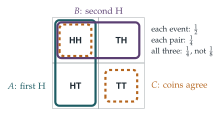

In a game, each member of a team of \(n\) players rolls a fair six-sided die. The total score of the team is the number of pairs of players rolling the same number. For example, if \(7\) players roll \(3, 3, 3, 3, 6, 6, 2\) the total score is \(7\), as six different pairs of players both score \(3\) and one pair of players both score \(6\).
Let \(X_{ij}\), for \(1 \leq i < j \leq n\), be the random variable that takes the value \(1\) if players \(i\) and \(j\) roll the same number and the value \(0\) otherwise. Show that \(X_{12}\) is independent of \(X_{23}\). Hence find the mean and variance of the team’s total score.
Show that, if \(Y_i\), for \(1 \leq i \leq m\), are random variables with mean zero, then \[\mathrm{Var}(Y_1 + Y_2 + \cdots + Y_m) = \sum_{i=1}^{m}\mathrm{E}(Y_i^2) + 2\sum_{i=1}^{m-1}\sum_{j=i+1}^{m}\mathrm{E}(Y_iY_j).\]
In a different game, each member of a team of \(n\) players rolls a fair six-sided die. The total score of the team is the number of pairs of players rolling the same even number minus the number of pairs of players rolling the same odd number. For example, if \(7\) players roll \(3, 3, 3, 3, 6, 6, 2\) the total score is \(-5\).
Let \(Z_{ij}\), for \(1 \leq i < j \leq n\), be the random variable that takes the value \(1\) if players \(i\) and \(j\) roll the same even number, the value \(-1\) if players \(i\) and \(j\) roll the same odd number and the value \(0\) otherwise. Show that \(Z_{12}\) is not independent of \(Z_{23}\). Find the mean of the team’s total score and show that the variance of the team’s total score is \(\frac{1}{36}n(n^2 - 1)\).
The hook
Players \(1\) and \(2\) roll the same number. Does that tell you anything about whether players \(2\) and \(3\) roll the same number? Surprisingly, no: the events are independent. The same goes for players \(1\) and \(3\). But if \(1\) matches \(2\) and \(2\) matches \(3\), then certainly \(1\) matches \(3\). Three events, each pair independent, but not independent all together.
Pairwise independence is weaker than full independence, and the difference matters. For variances, pairwise independence is all you need, which this question exploits. For many other purposes it is not enough. Computer scientists use pairwise independent random numbers deliberately, because they are much cheaper to generate than fully independent ones and are good enough for many algorithms.
Before you start
What is \(\mathrm{P}(X_{12} = 1)\)? What is \(\mathrm{P}(X_{12} = 1 \text{ and } X_{23} = 1)\)?
Whatever player \(1\) rolls, player \(2\) matches it with probability \(\frac16\). Both \(X_{12} = 1\) and \(X_{23} = 1\) means all three roll the same number: probability \(\frac{6}{216} = \frac{1}{36}\).
Working it through
Stage 1 Pairwise independence
Since \(\mathrm{P}(X_{12} = 1, X_{23} = 1) = \frac{1}{36} = \frac16 \cdot \frac16 = \mathrm{P}(X_{12} = 1)\mathrm{P}(X_{23} = 1)\), and each variable takes only two values, \(X_{12}\) and \(X_{23}\) are independent. (For two-valued variables, one cell of the joint table determines the rest; exercise 1 makes this precise.) Pairs with no player in common, such as \(X_{12}\) and \(X_{34}\), are clearly independent. So all the \(X_{ij}\) are pairwise independent.
Stage 2 Mean and variance of the score
The score is \(S = \sum_{i<j}X_{ij}\), a sum of \(\binom n2\) variables, each with mean \(\frac16\) and variance \(\frac16 \cdot \frac56 = \frac{5}{36}\). Expectation always adds, so \(\mathrm{E}(S) = \frac16\binom n2\).
When does the variance of a sum equal the sum of the variances?
The variance of a sum is the sum of the variances plus twice the sum of the covariances, and independent pairs have zero covariance. Pairwise independence is enough: \[\mathrm{E}(S) = \frac{n(n - 1)}{12}, \qquad \mathrm{Var}(S) = \frac{5}{36}\binom n2 = \frac{5n(n - 1)}{72}.\]
Stage 3 The variance formula
If the \(Y_i\) have mean zero, then \(\mathrm{Var}(\sum Y_i) = \mathrm{E}\bigl((\sum Y_i)^2\bigr)\), and expanding the square gives every \(Y_i^2\) once and every product \(Y_iY_j\) (with \(i < j\)) twice. Taking expectations gives the formula.■
Stage 4 The odd-and-even game
What is \(\mathrm{E}(Z_{12})\)? What values can \(Z_{12}Z_{23}\) take, and when is it non-zero?
\(Z_{12} = 1\) with probability \(\frac{3}{36} = \frac{1}{12}\) (both roll \(2\), both \(4\) or both \(6\)), and \(-1\) with probability \(\frac{1}{12}\); so \(\mathrm{E}(Z_{12}) = 0\) and \(\mathrm{E}(Z_{12}^2) = \frac16\).
\(Z_{12}Z_{23} \neq 0\) only when all three players roll the same number, and then \(Z_{12} = Z_{23}\) (both \(+1\) or both \(-1\)), so the product is \(1\). Hence \(\mathrm{E}(Z_{12}Z_{23}) = \frac{1}{36}\), which is not \(\mathrm{E}(Z_{12})\mathrm{E}(Z_{23}) = 0\): they are not independent.■
(Even more directly, \(\mathrm{P}(Z_{12} = 1, Z_{23} = -1) = 0\), while each event alone has probability \(\frac{1}{12}\).)
Stage 5 The variance
The total score \(T = \sum Z_{ij}\) has mean \(0\). By part (ii), \(\mathrm{Var}(T)\) is \(\binom n2 \cdot \frac16\) plus twice the sum of \(\mathrm{E}(Z_{ij}Z_{kl})\) over pairs of pairs. Pairs of pairs with no common player contribute \(0\) (they are independent, each with mean zero). Pairs of pairs sharing exactly one player each contribute \(\frac{1}{36}\), and there are \(n\binom{n-1}{2}\) of them (choose the shared player, then two others). So \[\begin{aligned} \mathrm{Var}(T) &= \frac{n(n - 1)}{12} + 2 \cdot \frac{1}{36} \cdot \frac{n(n - 1)(n - 2)}{2} \\ &= \frac{n(n - 1)}{36}\bigl(3 + (n - 2)\bigr) = \frac{n(n^2 - 1)}{36}. \qed \end{aligned}\]

Looking back
Indicators. Writing the score as a sum of indicator variables reduced everything to pairs of players.
Variance needs only pairs. The variance of a sum depends only on the pairwise covariances, so pairwise independence is enough to add variances.
Check independence, do not assume it. Two games that look alike had different dependence structures.
What’s really going on
Independence of several events
Events \(A_1, \ldots, A_n\) are independent if, for every subcollection, the probability of the intersection is the product of the probabilities. For three events this means four conditions: three for the pairs, and \(\mathrm{P}(A \cap B \cap C) = \mathrm{P}(A)\mathrm{P}(B)\mathrm{P}(C)\). Sergei Bernstein gave the example in Figure 12.4.1 in the 1920s to show that the pairwise conditions do not imply the triple one. (Conversely, the triple condition alone does not imply the pairwise ones either.) The matching events \(X_{12}\), \(X_{23}\), \(X_{13}\) in the question are exactly like Bernstein’s coins.
Uncorrelated is not independent
Zero covariance, \(\mathrm{E}(XY) = \mathrm{E}(X)\mathrm{E}(Y)\), is weaker still than independence. STEP III 2000 Q14 (in the exercises) shows that for variables taking only two values the two notions coincide, but with three values they do not. A simple example: let \(X\) be uniform on \(\{-1, 0, 1\}\) and \(Y = X^2\). Then \(\mathrm{E}(XY) = \mathrm{E}(X^3) = 0 = \mathrm{E}(X)\mathrm{E}(Y)\), yet \(Y\) is completely determined by \(X\). Covariance measures only linear association.
Random numbers are expensive for a computer to generate. In 1979 Larry Carter and Mark Wegman showed that for many algorithms, such as hashing, which stores data at pseudo-random locations, pairwise independent random choices are just as good as fully independent ones. Pairwise independent values can be generated very cheaply: for example, \(a + bk \pmod p\) for \(k = 0, 1, \ldots, p - 1\), with \(a\) and \(b\) random, gives \(p\) values any two of which are independent. The variance calculation of this question is why it works: Chebyshev’s inequality needs only variances, and variances need only pairs.
The thinking skill
To find the mean and variance of a count, write it as a sum of indicator variables, one for each thing that might be counted. The mean needs single indicators; the variance needs pairs.
This is one of the most useful techniques in probability, and it appeared already in Section 9.8. At university it powers the analysis of random graphs, of algorithms and of statistical tests.
Try this next
Two values. (From STEP III, 2000.) \(X\) takes the values \(x_1 \neq x_2\) and \(Y\) the values \(y_1 \neq y_2\), with \(\mathrm{P}(X = x_1, Y = y_1) = a\), \(\mathrm{P}(X = x_1) = q\), \(\mathrm{P}(Y = y_1) = p\). Show that if \(\mathrm{E}(XY) = \mathrm{E}(X)\mathrm{E}(Y)\) then \((a - pq)(x_1 - x_2)(y_1 - y_2) = 0\), and deduce that \(X\) and \(Y\) are independent. Give a joint distribution for \(A\) and \(B\), each uniform on \(\{-1, 0, 1\}\), with \(\mathrm{E}(AB) = \mathrm{E}(A)\mathrm{E}(B)\) but not independent.
A bigger team. For \(n = 7\) in part (i), find the mean and standard deviation of the score, and compare the example score \(7\) with them.
Birthdays again. Use indicators to find the mean and variance of the number of pairs sharing a birthday among \(k\) people (Section 9.9). Are the indicators pairwise independent?
Pairwise but not triple. Find three events, each of probability \(\frac12\), with \(\mathrm{P}(A \cap B \cap C) = \frac18\) but which are not pairwise independent.
Further reading
Geoffrey Grimmett & David Stirzaker, Probability and Random Processes (Oxford University Press), the opening chapters on independence.
Michael Mitzenmacher & Eli Upfal, Probability and Computing (Cambridge University Press). Pairwise independence and its uses in algorithms.
Joseph Blitzstein & Jessica Hwang, Introduction to Probability (CRC Press; free online), on indicators and covariance.